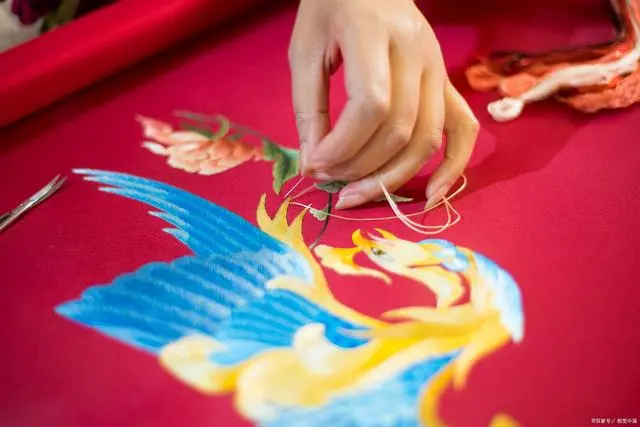

湘绣
湘绣是湖南省的传统刺绣技艺，长沙作为湘绣的发源地之一，有着深厚的湘绣文化底蕴。 湘绣以其细腻、精美、富有地方特色的刺绣工艺和绚丽多彩的色彩，被誉为“东方艺术之花”。
湘剧
湘剧是湖南省传统的地方戏曲，流传广泛，其中以湘南地区的湘剧最为有名。 湘剧以其豪放、朴实、自然的表演风格，生动地展现了湖南人的豪爽和淳朴
岳阳楼
岳阳楼是湖南省的著名古迹之一，也是中国四大名楼之一。 岳阳楼以其优美的建筑风格、深厚的历史文化内涵和美丽的江南风光， 吸引了无数游客前来观赏。
龙舟竞渡
龙舟竞渡是中国传统的民俗活动，长沙也有着丰富的龙舟文化。每年的端午节， 长沙市各地都会举行龙舟竞渡比赛，吸引了大批观众前来观赛。

湘菜
湘菜是湖南省的传统美食，也是中国八大菜系之一。长沙作为湖南省的省会， 有着丰富的湘菜文化，各种传统的湘菜美食在这里都能品尝到。